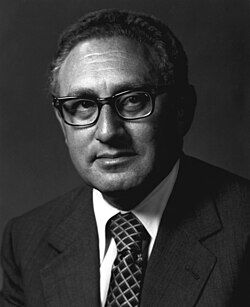

Henry Kissinger
Secretary of State, 1923 to 2023

Born in Germany, he came to the United States in 1938 as a Jewish refugee. As a U.S. Army Counter Intelligence Corps agent in 1945 and 1946 he tracked Gestapo officers and ran denazification in the Bensheim district. While at Harvard he consulted for the Psychological Strategy Board in 1952 and the National Security Council's Operations Coordinating Board in 1955, and from 1956 to 1958 he directed the Rockefeller Brothers Fund's Special Studies Project. He was national security adviser from 1969 to 1975 and secretary of state from 1973 to 1977. 1
Some UFO researchers and podcasters claim he ran a secret flying-saucer program in the 1950s. UNVERIFIED: the story rests on a secondhand account of a private conversation, and no document supports it. 2,3
Open in the interactive Watcher
Related
- Majestic 12 papers surface Linked by claimants to the MJ-12 papers
Sources
- Henry Kissinger Wikipedia
- Dr. Henry Kissinger's Key UFO Role Revealed UFO Digest, July 27, 2011
- Henry Kissinger & UFO Secrecy: The Dark Connection (American Alchemy with Jesse Michels, transcript) PodScripts, Apr. 17, 2025